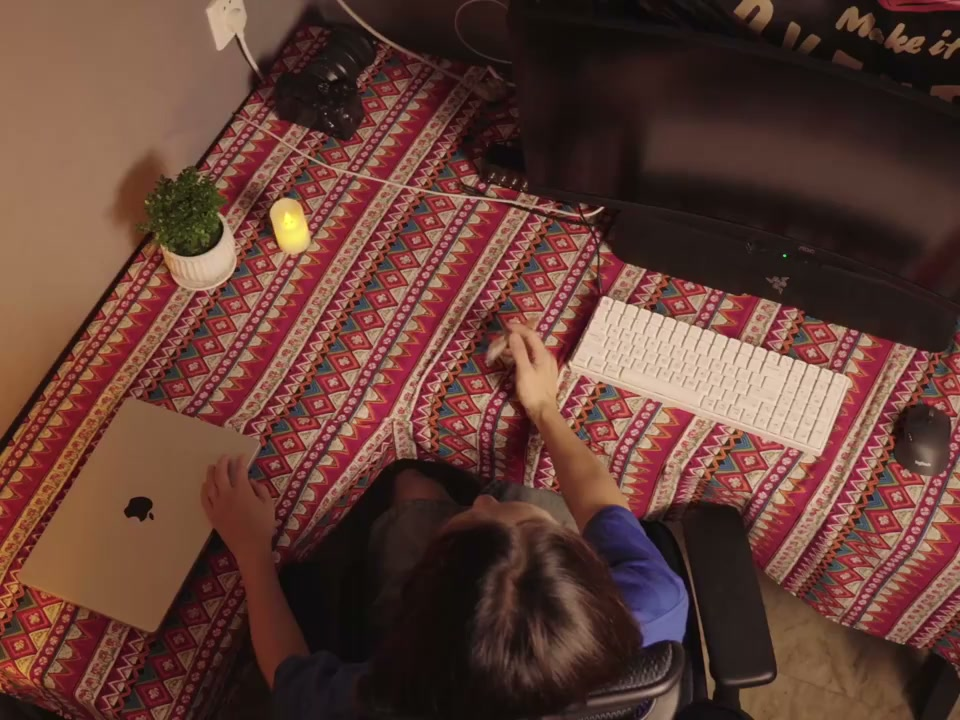

内容要点
这段视频围绕「成为做Vlog的高手，可以从模仿开始！」展开，按时间介绍其中的关键环节。很多人都在问为什么我的成长速度会这么快。
原理说明
很多人都在问为什么我的成长速度会这么快。其实答案早就在我的视频中表现出来。在视频创作中模仿是非常常见的起点。模仿的过程让我们在最短的时间内。掌握构图、节奏、剪辑、配乐等核心技巧。就像写字画画都是从淋膜开始的。学习视频剪辑也一样

剪辑与呈现处理
一上来就拍大片难度极高。不如静下来研究一些大神的剪辑手法。模仿并非抄袭。而是在吸收技法后加上个人的创意。在这个过程中可能就会慢慢发现自己尤其喜欢哪些内容。擅长哪种表现手法。也会渐渐形成与众不同的创作风格和视角。这本质上是模仿到副创的过程。也需要在模仿中保持理性的思考。很多伟大的创作者都是从模仿开始的
操作演示
从经典中继续灵感和经验。才逐渐提炼出独属于自己的风格。但是模仿只能是起点。最终目标是成为独居特色的原创者。实现从学习他人到超越他人的飞跃。模仿并不是偷懒。而是在为自己的创意之路打好坚实的地基。或许下一位成功的视频创作者。说不定就正在练习模仿著你
总结
从经典中继续灵感和经验。